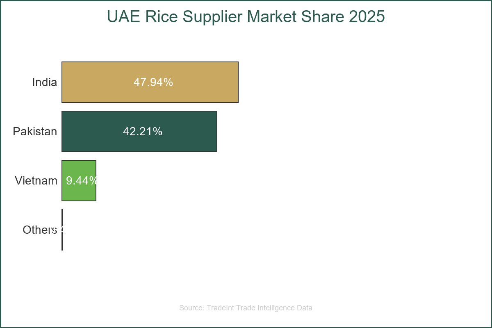
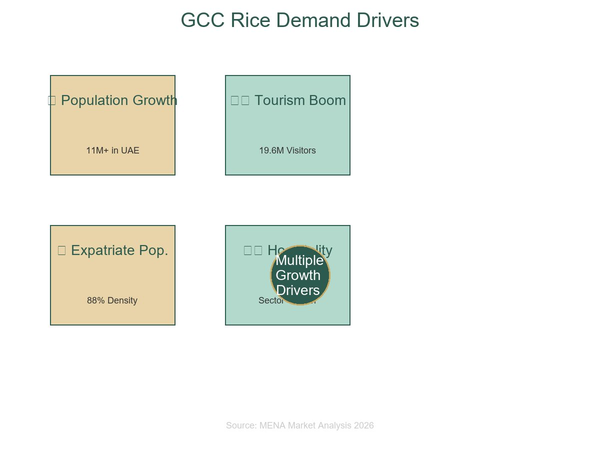
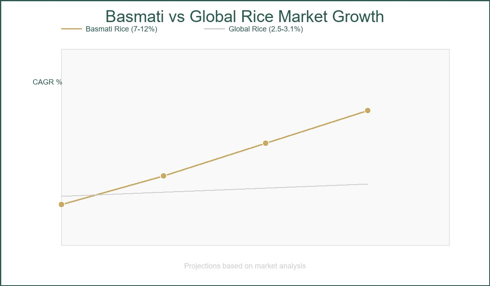
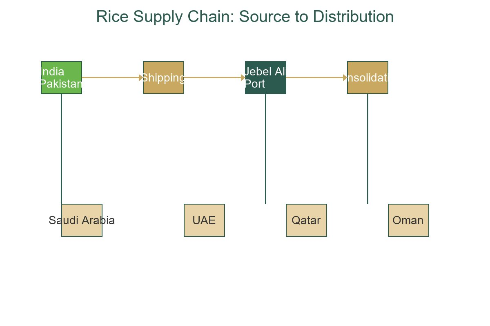
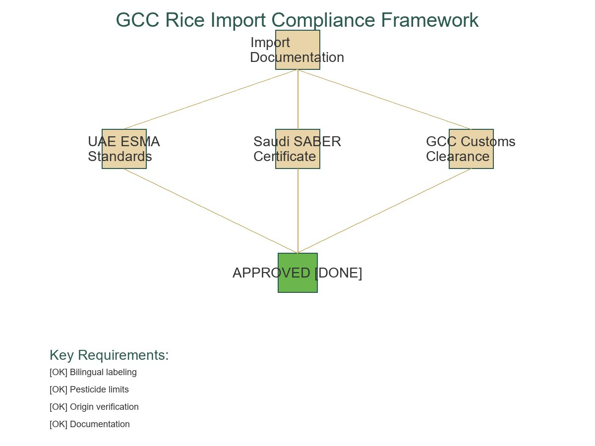
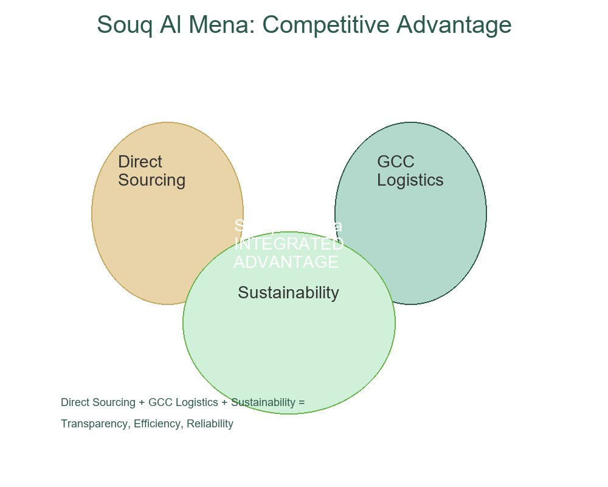

📑 Table of Contents
Every year, billions of dollars worth of rice moves through the UAE, positioning the country as one of the most strategically vital trade hubs in the entire MENA region. For businesses looking to understand the import export rice landscape, the UAE offers both remarkable opportunities and complex dynamics that demand careful analysis.
UAE Rice Trade in 2026: Market Snapshot and Strategic Overview
The UAE's structural import dependency on rice makes it one of the most consequential grain trade corridors in the entire MENA region. With negligible domestic production capacity constrained by arid climate and less than 1% arable land coverage, the country sources virtually all of its rice requirements from international markets.

UAE rice import data from USDA FAS confirms that imports reached approximately US$449 million in 2025, with USDA FAS forecasting 975,000 metric tons for marketing year 2025/26, a figure that reflects sustained consumption growth driven by expatriate population density, inbound tourism, and an expanding foodservice sector.
UAE Rice Import Landscape: Supplier Breakdown and Volume Analysis

The UAE's rice import architecture in 2025 reflects a market defined by extreme supplier concentration and a clear structural preference for processed grain formats. According to TradeInt trade intelligence data, India leads all source countries at US$215.17 million, representing 47.94% of total UAE rice import value, followed closely by Pakistan at US$189.49 million (42.21%) and Vietnam at US$42.36 million (9.44%).
- India: US$215.17M (47.94%) - Premium Basmati focus
- Pakistan: US$189.49M (42.21%) - Basmati & specialty varieties
- Vietnam: US$42.36M (9.44%) - Jasmine & commodity grades
- Combined Market Share: 99.6% of total UAE rice imports
- Concentration Risk: 90% from just 2 countries creates vulnerability
Together, these three nations account for approximately 99.6% of the UAE's total tracked rice import value, leaving marginal room for alternative origin countries such as Sri Lanka and Bangladesh, which collectively contribute less than 0.4% of total import value.
MENA Rice Demand Drivers: Why GCC Growth Is Outpacing Global Averages

While global rice consumption growth remains constrained by supply-heavy conditions and modest per-capita gains across mature markets, the GCC region is operating on an entirely different trajectory. Demand across the UAE, Saudi Arabia, and Qatar is estimated to have climbed 12 to 18% in recent projections, a figure underpinned by structural forces that are largely insulated from the cyclical pressures affecting commodity-grade rice elsewhere.
Premium Basmati Rice: The High-Value Segment Outperforming Commodity Markets

Within the broader rice trade landscape, premium Basmati occupies a structurally distinct position, one defined not by volume but by value. While commodity rice grades face mounting margin compression from record global output, aromatic long-grain Basmati varieties are charting an independent growth trajectory that institutional buyers and trade operators cannot afford to overlook.
- Current Market Size (2025): USD 14.72 - 16.02 billion
- Projected Size (2032-2035): USD 26.89 - 37.94 billion
- CAGR Growth Rate: 7-12% annually
- Price Premium vs Commodity: 30-60% markup for 1121 XXL varieties
- Key Markets: MENA, South Asia, Western diaspora communities
UAE as a Rice Re-Export Hub: The Jebel Ali and GCC Logistics Advantage

Beyond the import dynamics already examined, the UAE's commercial significance in global rice trade extends well past domestic consumption. The country functions as a sophisticated consolidation and redistribution node, with rice re-exports valued between US$35 million and US$48.5 million in recent trade data.
Sustainability and Traceability: The Emerging Procurement Standards in Rice Trade

The environmental footprint of rice cultivation has moved from a peripheral concern to a central factor in international procurement decisions. Recent research from the University of Maryland confirms that global greenhouse gas emissions from rice paddies have roughly doubled since 1961, now reaching approximately 1.1 billion tons of CO₂ equivalent annually.
Supply Chain Risk Management: Concentration, Diversification, and Direct Sourcing

The supplier concentration embedded in UAE rice import flows represents one of the most consequential structural vulnerabilities in the region's food supply chain. India and Pakistan collectively supplied approximately 90 percent of UAE rice import value in 2025, with India contributing US$215.17 million (47.94%) and Pakistan US$189.49 million (42.21%) of a total import base approaching US$449 million.
Regulatory Compliance and Import Standards for Rice in the GCC
The regulatory architecture governing rice imports across the GCC represents one of the most layered compliance environments in global agricultural trade, and understanding its mechanics is essential for any institutional buyer or exporter operating in the region.
- UAE ESMA Standards: Bilingual labeling, pesticide residue limits, country-of-origin verification
- Saudi SABER: Pre-shipment Product Certificate of Conformity, 12-month validity
- GCC Customs: Unified tariff framework, harmonized processing across borders
- Documentation: Origin chain verification, traceability records, batch-level identification
- Halal Certification: Required for processed/flavored rice and institutional buyers
How Souq Al Mena Serves Institutional Rice Buyers in UAE and MENA

For institutional buyers operating in the UAE and broader MENA region, the critical challenge in rice procurement has never been simply finding a supplier. It has been finding a supplier who combines origin-level quality control, competitive pricing freed from broker intermediaries, and reliable regional logistics into a single accountable relationship. Souq Al Mena, operating from its UAE base through souq-mena.com, is structured precisely to meet that specification.
Key Takeaways for Rice Importers and Exporters Operating in MENA
- ✅ The UAE rice import market at US$449M is structurally expanding, not declining, driven by population growth and foodservice expansion
- ✅ Premium Basmati segments grow at 7-12% CAGR, providing critical margin insulation against commodity rice price pressure
- ✅ Supplier concentration (90% from India/Pakistan) creates both risk and opportunity for strategic sourcing relationships
- ✅ Direct sourcing from mills eliminates broker intermediaries while building supply chain transparency
- ✅ Sustainability and traceability credentials are moving from competitive advantage to baseline procurement requirement
- ✅ GCC customs harmonization and UAE port infrastructure create lasting logistics advantages for UAE-based distributors
Ready to Optimize Your Rice Supply Chain?
Institutional buyers seeking direct sourcing from premium origins in India and Pakistan, combined with GCC compliance expertise and proven logistics infrastructure, can engage Souq Al Mena's B2B team directly.
Access: Verified origin documentation • Competitive wholesale pricing • Full GCC delivery network • Sustainability credentials • Real-time order tracking
📱 Contact B2B Team via WhatsAppOr visit: souq-mena.com
Related Articles
Smart Farming Drip Irrigation Systems for MENA Agriculture
Explore how precision irrigation reduces water consumption by 40% while maintaining crop yields in arid climates.
Read Article →B2B Procurement Strategies in Middle Eastern Trade
Master direct sourcing relationships, compliance frameworks, and cost optimization techniques for institutional bulk procurement.
Read Article →